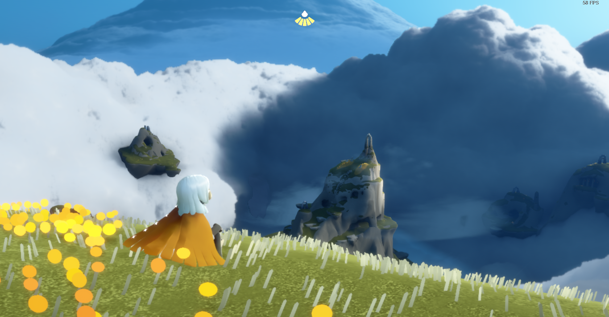

Cómo empezó nuestro grupo
Todo arrancó de la nada y ahora somos los mejores de todos. En esta wiki te contamos absolutamente todo lo que tenés que saber para no quedarte afuera.
Acá compartimos anécdotas, fotos y los momentos mas random del condado.

Todo arrancó de la nada y ahora somos los mejores de todos. En esta wiki te contamos absolutamente todo lo que tenés que saber para no quedarte afuera.
Acá compartimos anécdotas, fotos y los momentos mas random del condado.